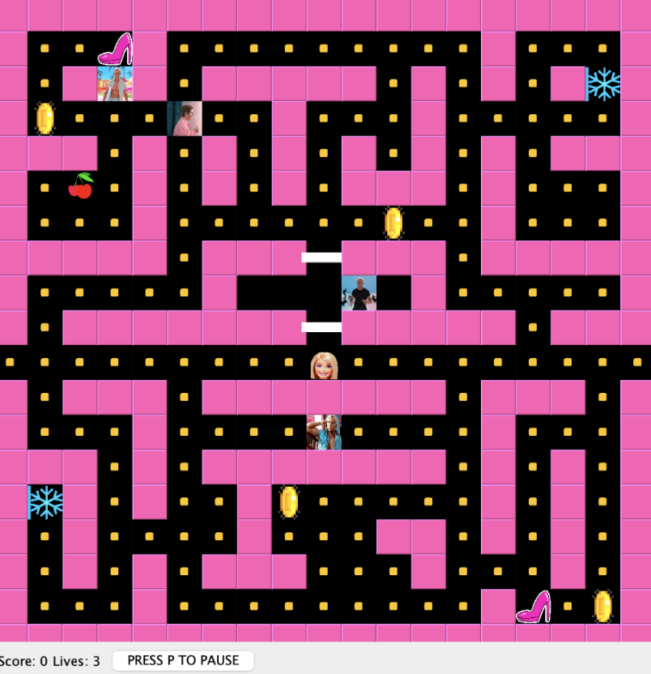
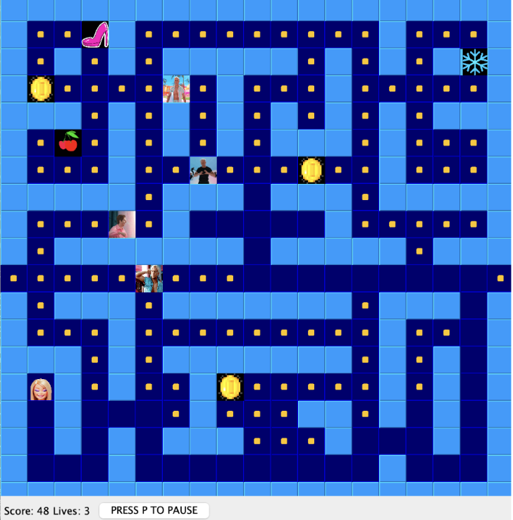
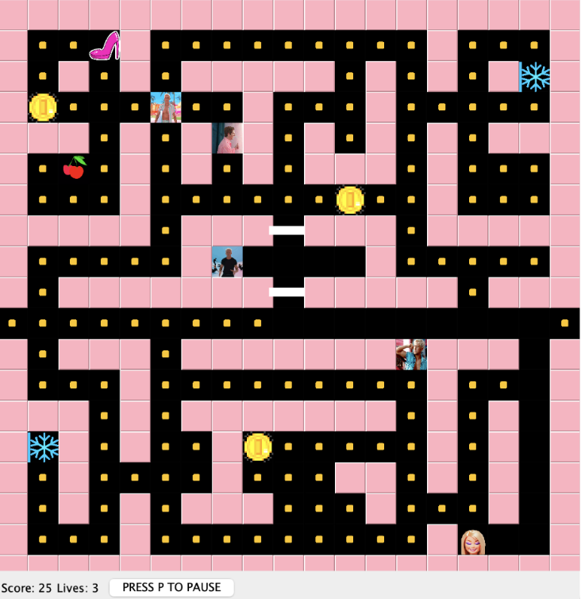
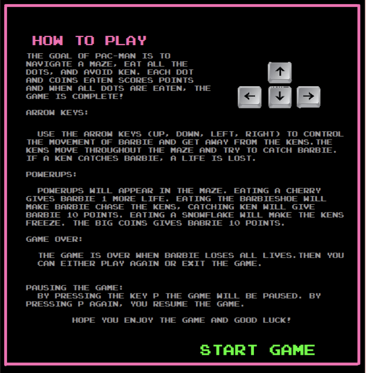
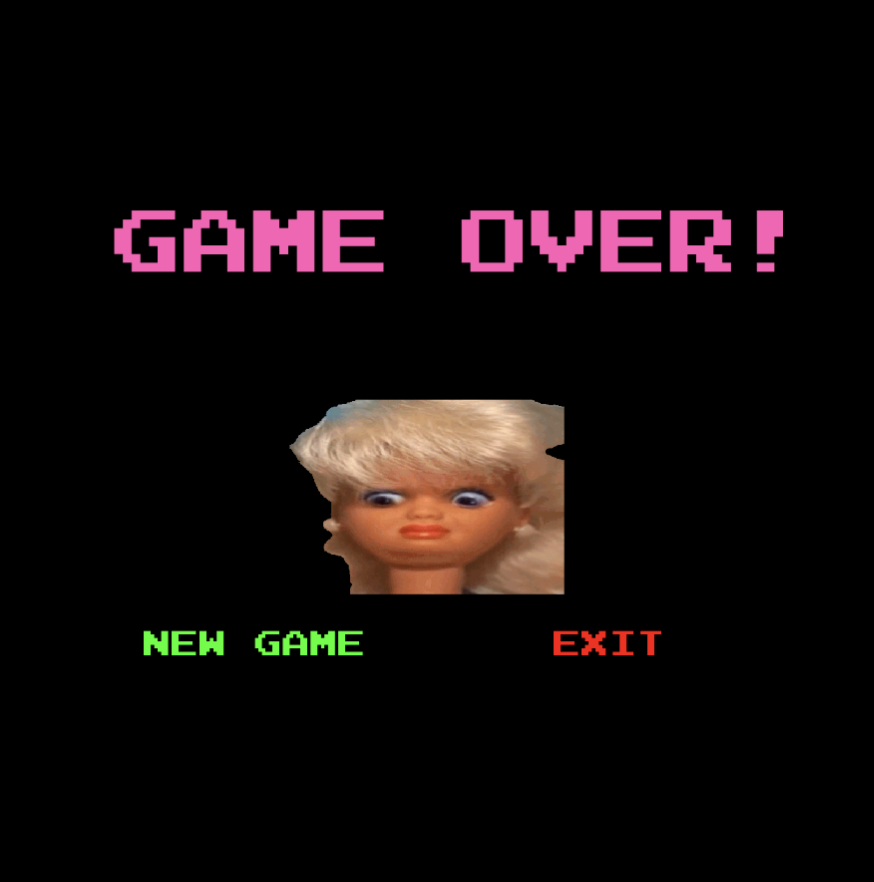

Pacman - Barbie Edition
A Barbie-inspired recreation of the classic Pacman game, developed in Java as a software design project at Chalmers University of Technology.
About the project
Pacman - Barbie Edition is a recreation of the classic Pacman game with characters and visual elements inspired by the Barbie universe.
The player controls Barbie through a maze using the keyboard. The goal is to collect all pellets while avoiding the Ken characters moving around the maze. Barbie starts with three lives and loses one when colliding with a Ken.
The game also includes several power-ups that temporarily change the behaviour of the player or enemies.


Software architecture
The application was built in Java Swing and structured according to the Model-View-Controller architecture.
The Model contains the game logic and components, the View is responsible for displaying the game, and the Controller handles keyboard input and communication between the different parts of the application.
This separation of responsibilities helped keep the application modular and made individual components easier to maintain and test.
Design patterns
Several design patterns were used throughout the project, including Observer, Strategy, State and Factory.
The Strategy pattern was used to implement different behaviours for the Ken characters. Their movement can switch between attack, scatter and random strategies depending on the state of the game.
The State pattern was used for temporary changes in game behaviour, while Observer helped maintain communication between components without tightly coupling them together.




Testing
JUnit tests were used throughout development to test individual components and verify that the game logic behaved as expected.
Development process
The project was developed collaboratively using user stories, acceptance criteria and a Definition of Done. The development process also included user feedback, domain modelling and regular team meetings.
What I learned
The project gave me practical experience with object-oriented software development, software architecture, design patterns, automated testing and collaborative software development.